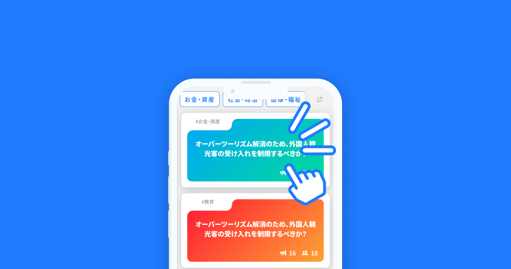
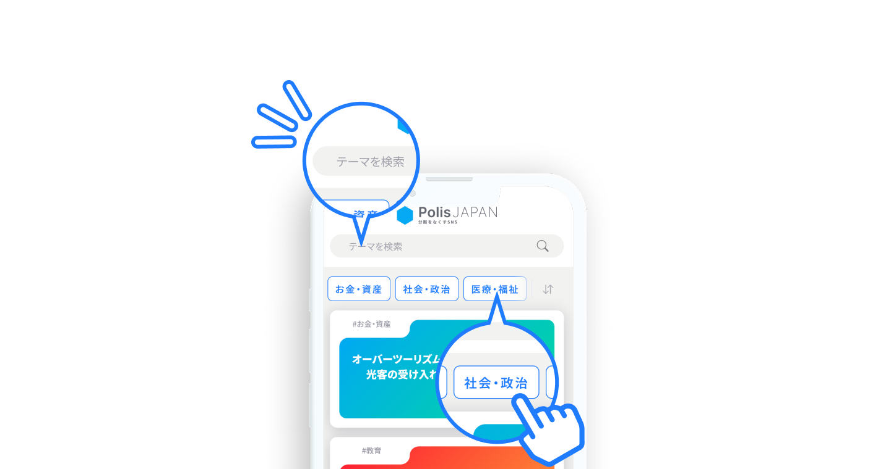
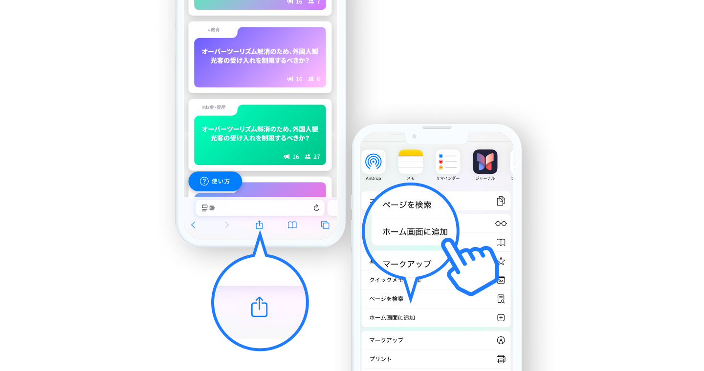

社会・政治
お金・資産
男女・性別
外国人問題
テクノロジー
医療・福祉
生活
その他
新着準
古い順
人気順
使い方
テーマを作成
テーマ作成
テーマは審査通過後に全体に公開されます
作成モード
AIアシスト
マニュアル入力
AIアシストモードでは生成モデルに
OpenAI社 GPT-5, GPT-5-nanoを使用しています。
テーマ作成完了
テーマ作成が完了しました。
テーマは審査後に全体に公開されます。
閉じる

Polisへようこそ！
Polisは、健全な議論や合意形成を促進する
新しいコミュニケーションツールです。
さっそく使ってみましょう！
次へ

気になる話題を選ぼう！
気になる話題はありましたか？
話題のカードをタップ/クリックすることで
議論やみんなの意見を確認できます。
気になる話題を確認してみましょう！
次へ

検索/絞り込みでもっと便利に
特に興味のある話題はありますか？
検索機能、カテゴリ選択機能を使って
あなたに合ったトピックを
探すことができます。
次へ
新しいテーマを投稿
『こんなテーマで話したい！』と思ったら
新しくテーマを作成することもできます。
あなたが見つけた論点を
世界に共有しましょう。
次へ
ご利用上の注意
Polisはブラウザ情報やCookieから
ユーザーを識別します。
プライベートブラウズや異なるデバイス、
ブラウザで閲覧した場合、情報が
引き継がれませんのでご注意ください。
次へ
次回から表示しない